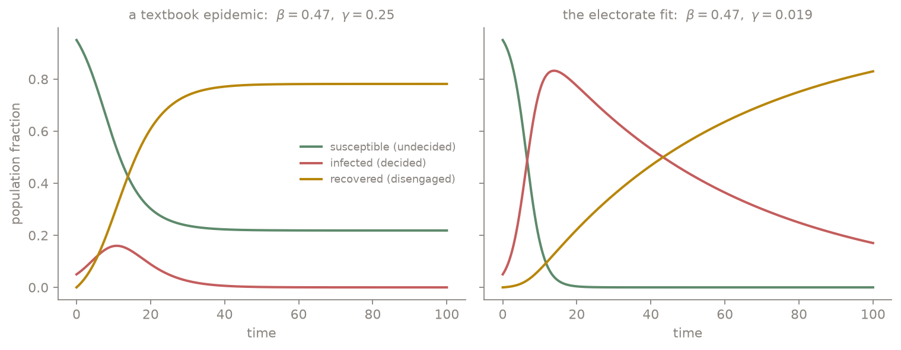

Fitting an epidemic to an electorate
One Dataset, Eight Lenses
For a systems biology course project (BT5420, with Shivan Ajay Iyer), we asked a slightly irreverent question: if you take the modelling frameworks biology uses for epidemics and ecosystems and point them at an electorate, do they say anything true? The dataset was US presidential vote shares from 1976 to 2020, state-resolved. The method was deliberately promiscuous: fit everything. An agent-based model of individual voters, two workhorse statistical models (ARIMA and VAR), two deep-learning approaches (Neural ODEs and physics-informed neural networks), and three biological classics: logistic S-curve growth, the SIR epidemic model, and Lotka-Volterra predator-prey dynamics.
The honest summary, and the reason this post exists, is that the most informative outputs were not the fits. They were the fitted parameters, including the ones that came back essentially zero. A model that fails cleanly tells you something about the system that a flexible model fitting well never will. Three numbers from the project have stuck with me, and the post is organized around them.
The Contagion Frame
The SIR mapping treats deciding like catching something: undecided voters are susceptible, committed supporters are infected and transmit their commitment through social contact, and voters who disengage are recovered:
$$ \frac{dS}{dt} = -\beta S I, \qquad \frac{dI}{dt} = \beta S I - \gamma I, \qquad \frac{dR}{dt} = \gamma I $$
Fitting $\beta$ and $\gamma$ to the vote-share series by least squares (and cross-checking with an evolutionary algorithm, a grid search, and a sliding window, which is worth a caveat I'll return to) gave the headline numbers.
Number one: $\beta = 0.47$, $\gamma = 0.019$. Transmission is twenty-five times faster than recovery. In epidemiological terms this is a pathogen almost nobody clears. Here is what those rates do to a population, next to a textbook epidemic with the same transmission:

A textbook epidemic self-limits: infection burns through, recovery drains the infected class, and a fraction of the susceptible pool is never reached. The electoral fit does neither. The undecided pool is consumed almost immediately and the committed class holds its gains for decades. That is not a forecast; it is a low-dimensional caricature. But it is a quantified caricature of polarization: political commitment, in this data, spreads like a disease and resolves like a chronic condition.
The Metaphor That Refused to Fit
Lotka-Volterra was the framework we expected to be most fun: two parties as predator and prey, cyclically feeding on each other's vote share:
$$ \frac{dx}{dt} = \alpha x - \beta x y, \qquad \frac{dy}{dt} = \delta x y - \gamma y $$
Number two: every fitted interaction rate came back at or near $10^{-4}$ ($\alpha \approx 0$, $\beta \approx 0.0001$, $\delta \approx 0.0001$, $\gamma \approx 0$). The optimizer, given every opportunity to make the parties devour each other, concluded they barely interact in this functional form. I find this genuinely instructive, in two directions. First, it is the model failing honestly: vote shares in a two-party system are coupled by construction (they roughly sum to a constant), but they are not coupled multiplicatively through encounters the way predation is, and the fit said so instead of pretending. Second, the statistical picture disagrees in an interesting way: the VAR fit found strong cross-dependence, with the Democratic share loading more heavily on lagged Republican share than on its own history:
$$ \mathrm{Dem}_t = 0.005 + 0.157 \, \mathrm{Dem}_{t-1} + 0.343 \, \mathrm{Rep}_{t-1} + 0.125 \, \mathrm{Dem}_{t-2} + 0.375 \, \mathrm{Rep}_{t-2} $$
So the parties do move together statistically; they just don't do it through anything shaped like predation. When a mechanistic model and a statistical model disagree, the disagreement localizes the missing mechanism, which is more than either model gives you alone.
Fifty Elections Are Not One Election
Number three: the average Pearson correlation of vote-share series between states was $0.012$. Essentially zero. The national vote share, the thing pundits narrate as a single object, is an aggregate of state-level series that barely co-move. Every aggregate model in the project was, in hindsight, fitting a superposition. The practical consequence was that SIR fits had to be done per state (New Hampshire and Oregon appear in the report), and the redeeming observation is that the fitted rates were fairly consistent across states, with the variation living mostly in initial conditions. The epidemiological reading is tidy: similar transmission physics everywhere, different outbreak histories. Whether that reading survives contact with actual political science is exactly the kind of question a course project gets to raise and not answer.
The Scoreboard, and a Lesson About Priors
Among the forecasting-flavored models, the ranking surprised us in one place. ARIMA, the least glamorous model in the lineup, was hardest to beat. The Neural ODE, which learns the right-hand side of a continuous-time ODE from data, managed a mean squared error of $19.31$ but still trailed ARIMA, a clean case of continuous-time flexibility buying overfitting on a 12-point-per-state time series. The physics-informed neural network came last at $51.60$, and the reason matters: a PINN's loss penalizes deviation from governing dynamics, and we supplied Lotka-Volterra-style dynamics as the physics. We had, in effect, regularized the network toward a mechanism the data had already voted against. A physics prior is only a prior; when the physics is wrong, it is just a well-organized bias. The S-curve logistic fit completed the picture by degenerating to a near-constant line at about 52 percent: national two-party vote share has no adoption dynamics to capture, just a tug-of-war around the middle.
The agent-based model sat apart from the scoreboard, doing what ABMs do: generating mechanism-level what-ifs. Voters updated opinions by the Deffuant rule (move toward a neighbor's opinion only when it is already within tolerance $\epsilon$), turned out via a logistic function of enthusiasm and social pressure, and chose candidates by softmax utility. Its most pointed output: a simulated targeted smear campaign moved undecided voters disproportionately, which is at least qualitatively aligned with what the misinformation literature keeps finding.
Caveats, Owned
The report is candid about its limits and I want the blog version to be too. The parameters are assumed constant from 1976 to 2020, which no one believes. SIR's one-way S to I to R pipeline forbids voters switching parties or re-engaging, which the real system does constantly. The electorate is modeled as homogeneous, there are exactly two parties, and media, money, and events enter nowhere except the ABM. Parameter estimation deserves its own asterisk: the fit surface is shallow in places, different optimizers can land in different basins, and the evolutionary-algorithm run found a qualitatively different optimum on its dataset than the least-squares fits, so the headline rates should be read as one well-supported basin, not a unique truth. The proposals in the report's conclusion follow directly from the failures: a multi-group SIR stratified by demography and geography, an immunity compartment for party loyalty, and contagion running on a realistic social network rather than a well-mixed population.
Where This Lives
The frameworks are all classical and borrowed: Kermack and McKendrick (1927) for SIR, Lotka-Volterra from 1920s ecology, Pearl and Reed (1920) for logistic growth, Box-Jenkins for ARIMA, Sims (1980) for VAR, Chen et al. (2018) for Neural ODEs, Raissi et al. (2019) for PINNs, Epstein for generative agent-based social science, and Holland (1975) for the evolutionary algorithm used in fitting. The application to this dataset, the fits, and the numbers quoted above are from our BT5420 report (April 2025), written jointly with Shivan Ajay Iyer; the SIR comparison figure was regenerated for this post from the report's fitted parameters.
Eight models, one electorate, and the parameters were the punchline. An epidemic model fit fifty years of US vote shares with transmission twenty-five times faster than recovery, which is polarization stated as a rate constant. A predator-prey model, offered the chance to find cyclic party warfare, returned interaction rates of one part in ten thousand, a metaphor honestly refusing the data. States correlate at 0.012, so the national narrative aggregates fifty nearly independent systems. And the physics-informed network lost to plain ARIMA because the physics we informed it with was the one the data had already rejected. Simple mechanistic models earn their keep even when they are wrong, precisely because they are capable of being wrong in legible ways.